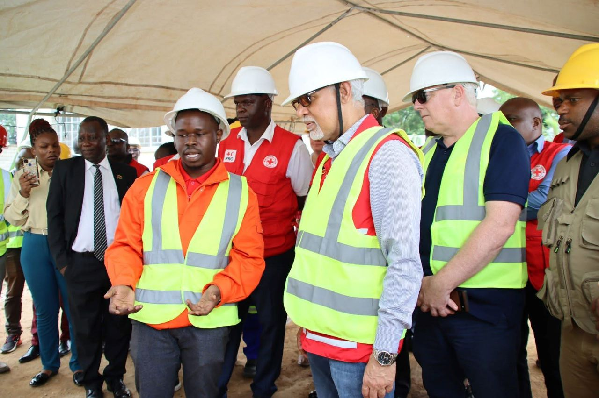
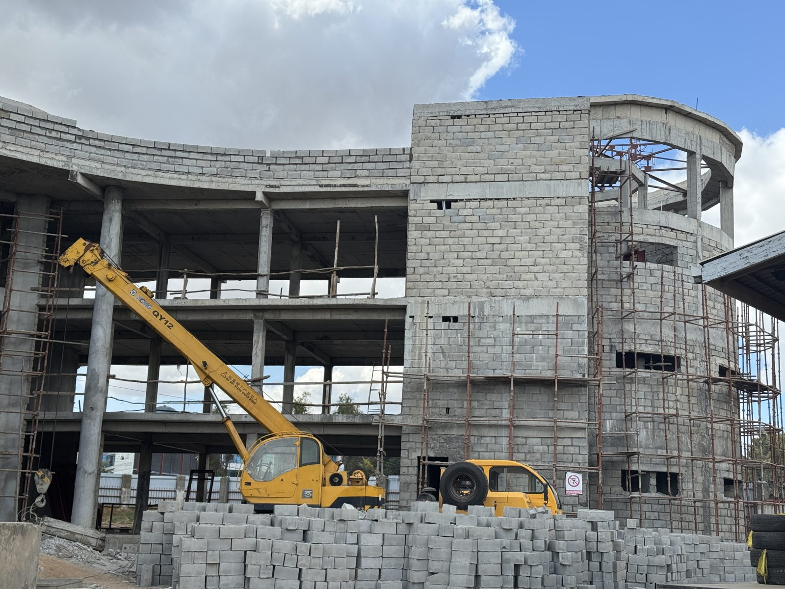
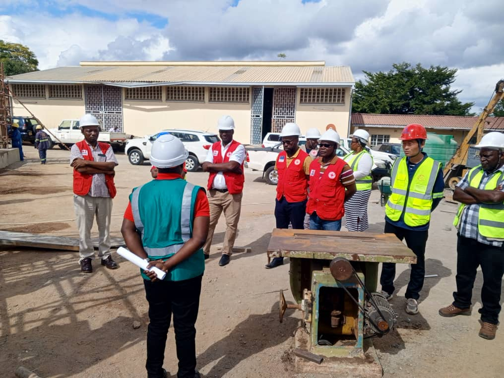
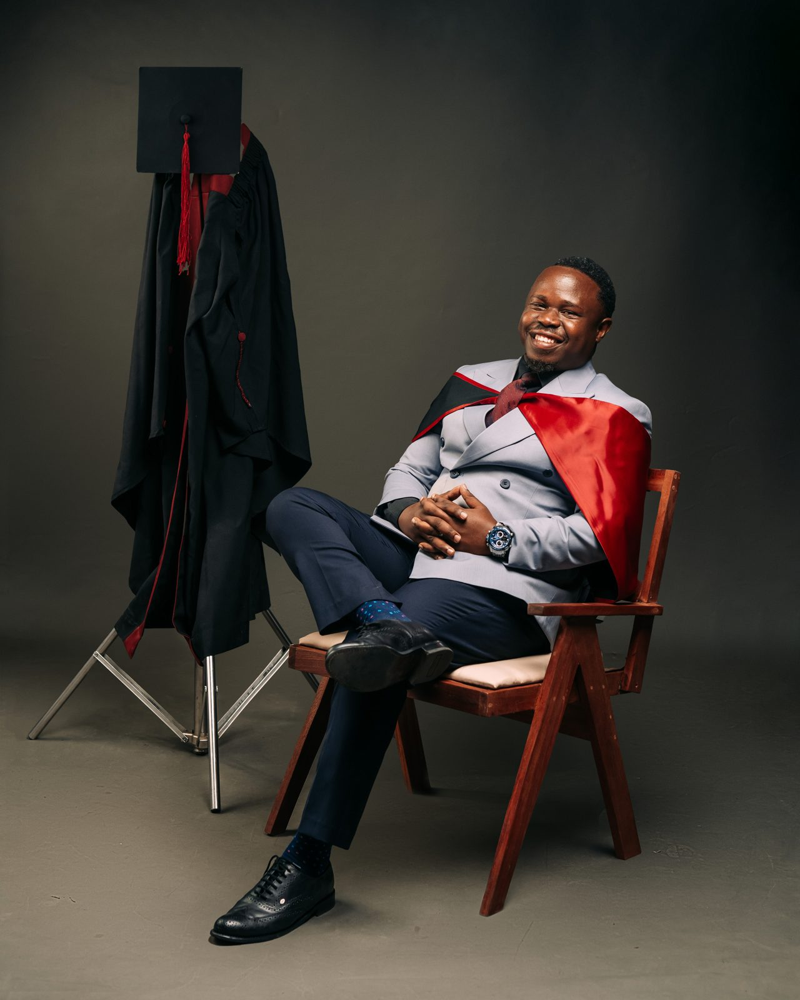

My Story
From irrigation weirs to an Emergency Operation Center, this is how my career has been built, one project at a time.
-
Jul – Dec 2018
Setting Out
Chiradzulu District Council – Irrigation Department · Intern Site Engineer
My career began on the ground in Chiradzulu, where I planned weekly site activities and set out irrigation infrastructure such as weirs and conveyance systems. Supervising artisans as they built reinforced concrete and stone masonry weirs taught me how a drawing becomes real infrastructure.


-
Jan – Dec 2019
Learning the Craft
RM Enterprise · Intern Structural Engineer
As a structural engineering intern, I analysed and designed concrete, steel and timber elements, then turned those designs into drawings and bending schedules. I also checked materials and workmanship on site, so quality became a habit from day one.


-
Jul 2020 – Oct 2023
Designing with Purpose
PILY Engineering Services · Structural Engineer
After graduating in Civil Engineering (Structures) in 2020, I joined PILY and designed reinforced concrete, steel, masonry and timber structures for homes, businesses, institutions and schools. Working with architects, quantity surveyors and contractors, I followed my designs from calculation to construction.


-
Jan 2022 – Feb 2023
Building Schools
Blantyre Synod Education Department · Projects & Maintenance Engineer (Independent Consultancy)
I managed the construction of modern, accessible school blocks, laboratories and staff houses for Community Day Secondary Schools in Zomba, Ntcheu, Blantyre and Balaka. Along the way I prepared donor proposals, standard drawings and monitoring reports for funders.


-
Mar – Sep 2023
Restoring Storage Facilities
USAID / Chemonics International · Site Engineer (Independent Consultancy)
Under a USAID-funded programme, I managed the rehabilitation and maintenance of pharmaceutical storage facilities across multiple districts. I assessed their condition, prepared cost estimates and supervised contractors to keep the works to specification.


-
Nov 2023 – Present
Leading the Build
Malawi Red Cross Society · Construction Engineer
Today, as Construction Engineer at Malawi Red Cross Society, I lead infrastructure projects from initiation to commissioning, including the Emergency Operation Center (EOC) in Blantyre. I work with consultants, contractors, authorities and communities to deliver on scope, budget, schedule and quality.



-
2026
Widening the Lens
Malawi University of Business and Applied Sciences · MSc Infrastructure Development and Management
In 2026 I completed my MSc in Infrastructure Development and Management, adding strategy and management skills to my structural engineering foundation.
